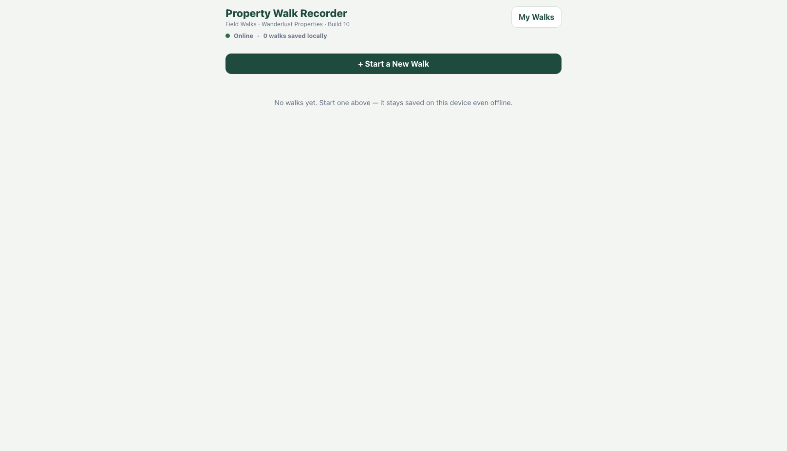
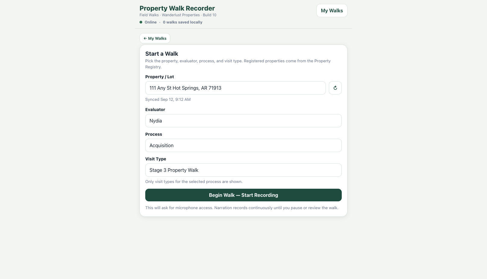
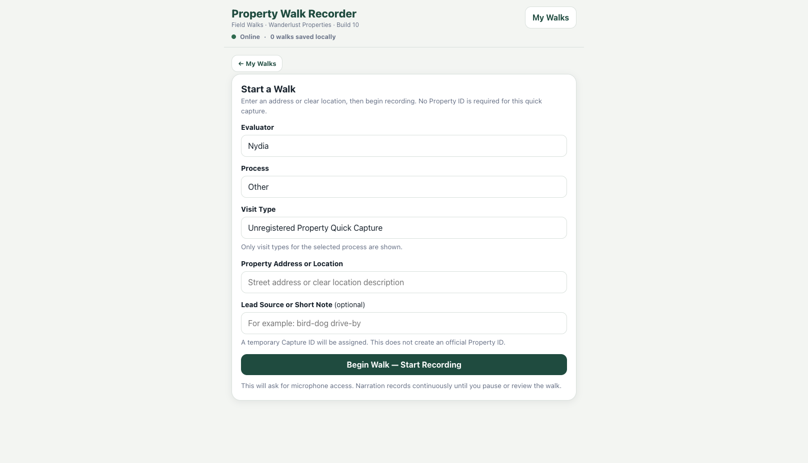
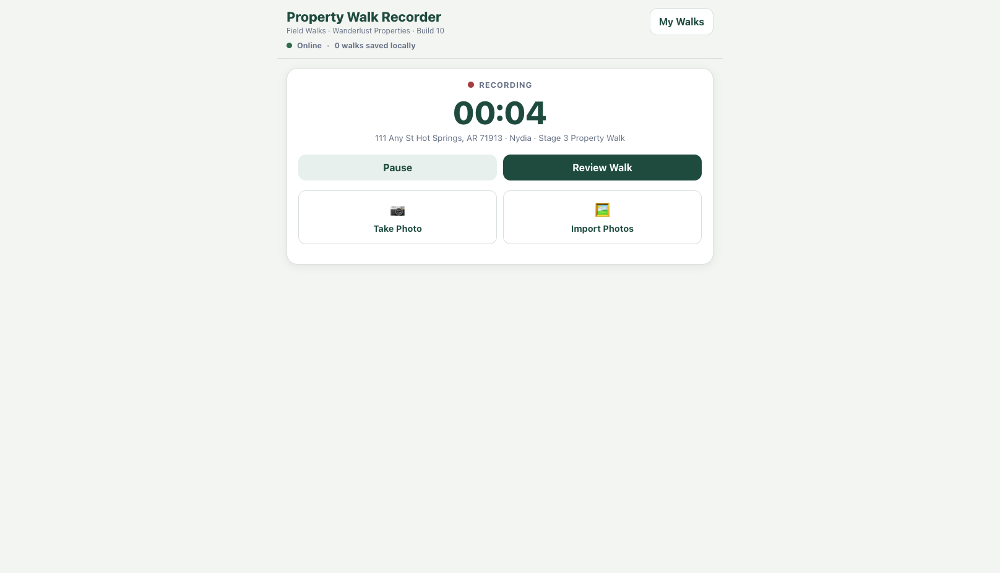
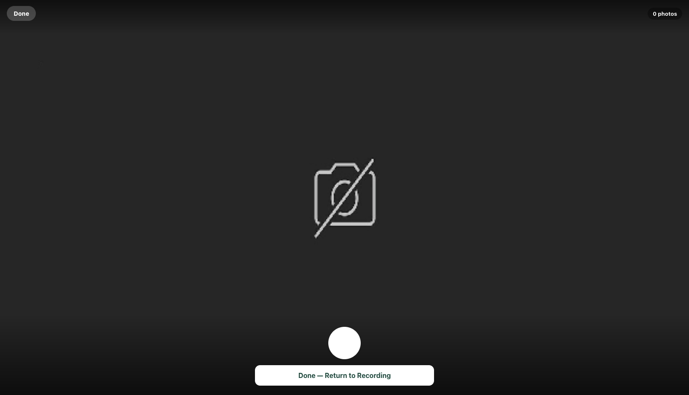
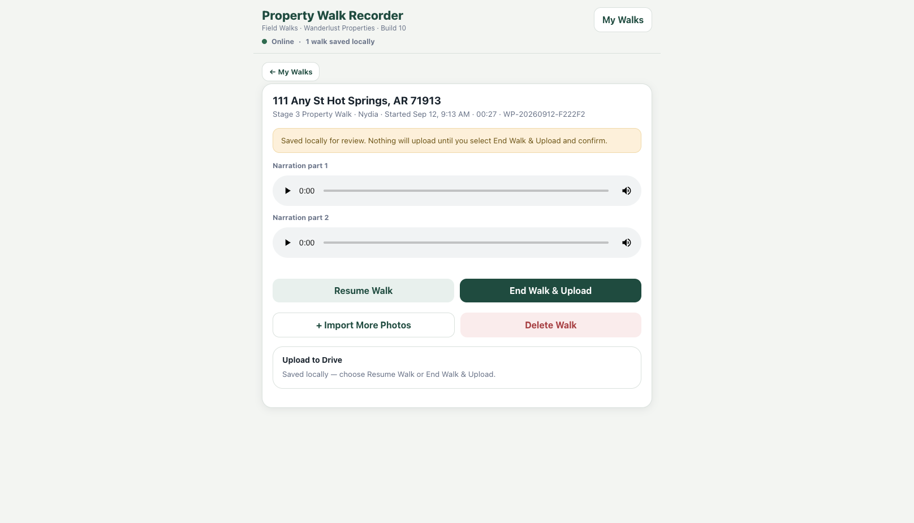
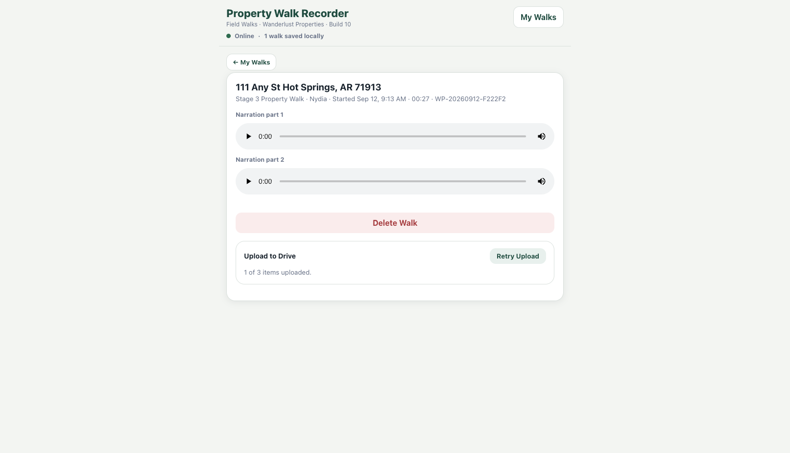

Build 22: Microphone Verification and Room Selection
Begin speaking and watch the live input meter. Continue only after the Recorder confirms that narration is being captured. If the meter does not respond, correct the microphone before walking. Keep the Recorder in the foreground and reverify after interruptions.
- Tap the correct current area before describing or photographing it.
- Announce the same room name aloud, then narrate and photograph it.
- Use numbered Bedroom 1, Bedroom 2, Bedroom 3, Bathroom 1 and Bathroom 2 in consistent physical order.
- Use Other to enter a custom name such as Bedroom 4 or Bathroom 3.
Build 22: Photograph, Pause, Review and Resume
- Tap the current area, open Take Photo, and confirm narration continues.
- Capture overview and condition details. Use Done or Done — Return to Recording without closing the browser.
- Use Pause only for a real break. Each pause/resume creates a separate raw narration clip, combined chronologically by the processor.
- Review Walk saves locally but does not upload. Check clips, photos and room labels; Resume Walk if evidence is missing.
- End Walk & Upload is irreversible once confirmed. Keep the page open for upload and processing.
Build 22: Destination Recovery and Processing
Confirm the registered property folder. If resolution fails, change or reassign the property, use a manual Drive-folder link, or select Recovery Inbox. An unregistered capture uses a temporary Capture ID rather than an official Property ID.
- In Progress: Continue Walk or Review Captured from My Walks.
- Ready for Review: Resume or finalize.
- Saved Locally: Reconnect and Retry Upload.
- Uploaded: Raw evidence is in Drive; confirm processing.
- Processing failed: Retry Processing, not a second media upload.
- Uploaded & Processed: Audio, photos, manifest, transcript and photo alignment are complete in Drive.
01 Before You Begin
- Charge the phone and confirm there is enough storage for the expected narration and photographs.
- Open the Recorder while connected to the internet so registered properties can synchronize.
- Confirm the correct audio input. The browser normally uses the phone microphone or the active connected Bluetooth microphone. When audio quality is uncertain, make a short test or use a connected AirPod.
- Do not clear browser site data while a walk is saved locally. Doing so can permanently remove narration and photographs that have not reached Drive.
02 Start the Correct Visit

Registered Property
- Select + Start a New Walk.
- Select the property or lot. If it is missing, tap the refresh button beside Property / Lot while online.
- Select the evaluator.
- Select the Process, then select the matching Visit Type.
- For a Property Follow-Up Walk or Other Property Visit, enter the specific purpose of the visit.
- Select Begin Walk — Start Recording and allow microphone access.
Process and Visit Type
- Acquisition: Stage 3 Property Walk, Stage 3 Lot Walk, or Property Follow-Up Walk.
- Construction: Phase 1 Construction Walk or Construction Update.
- Design: Phase 1 Design Walk.
- Other: Other Property Visit or Unregistered Property Quick Capture.
The selected visit type controls the correct destination inside the registered property record. Do not select a different type simply because its wording is similar.
Unregistered Property Quick Capture
Use this for a bird-dog lead or another useful observation when no official Property ID exists and a full scorecard is not being started.
- Select Process: Other.
- Select Visit Type: Unregistered Property Quick Capture.
- Type the property address or a clear location description.
- Optionally enter the lead source or a short note.
- Begin the walk normally.


03 Record, Pause, and Photograph
During the Walk
- The timer and red recording indicator confirm that narration is active.
- Use Pause for phone calls, unrelated conversation, or any period that should not appear in the report. Resume before continuing.
- Use Take Photo to open the in-app camera or Import Photos to add existing images.
- When zoom controls are supported by the phone and browser, the camera displays the available levels from .5×, 1×, 2×, and 3×. Only supported choices appear.
- Use either Done or Done — Return to Recording to leave the camera and return to the active walk. The walk remains active.


04 Review, Resume, and Finalize
Review Without Uploading
- Select Review Walk. This closes the current narration segment and saves the walk locally.
- Review the narration segments and all photographs on the review screen.
- If anything is missing, select Resume Walk. The same Walk ID reopens, and all new narration and photos are appended to that session.
- Repeat Review Walk and Resume Walk as many times as necessary before final upload.
End and Upload
- When the evidence is complete, select End Walk & Upload.
- Read the final warning and confirm. After upload begins, the walk can no longer be resumed.
- Leave the Recorder open while narration segments, photographs, and the session manifest upload.
- Do not consider the walk complete until the status reads Uploaded & Processed.


05 Recovery and My Walks
- In Progress: Select Continue Walk to keep recording, or Review Captured to inspect what the device retained.
- Ready for Review: Select Resume Walk to add more, or End Walk & Upload when the session is complete.
- Saved Locally / Upload Paused: The media remains on this phone. Reconnect and retry the upload.
- Uploaded & Processed: Drive verification completed. The Recorder may clear the heavy local media while retaining the walk record and Drive link.
The Recorder saves frequent audio chunks and progress markers. Recovery can preserve most or all of an interrupted walk, but it is not a substitute for using Review Walk before leaving the page.
06 Narration Standard
“Say where you are. Describe what you see. State what is known, what is uncertain, and whether an earlier concern has been resolved.”
The Five Non-Negotiable Rules
- Announce the full property address or clear location before describing anything.
- Announce every location change using a clear, ordinary room or area name.
- Describe property-specific conditions and visible work, not general construction advice.
- Take an overview photo and supporting detail photos while narrating that same area.
- If the walk is interrupted, explicitly close the current area, announce the temporary location, and announce when you return.
Recommended Walk Order
- Front approach and site
- Exterior, moving around the property in one direction
- Entry through the front door
- Interior, following the property’s natural path and clearly announcing each room
- Closing summary after all follow-up observations are complete
07 Exterior and Interior Evidence
Start and Exterior
“This is the [visit type] for [full property address or location]. The date is [date]. Starting with the front approach and exterior.”
Identify each side before describing it. Cover visible site access, grading, drainage, vegetation, retaining conditions, roof surfaces, gutters, fascia, soffit, siding, openings, decks, porches, exterior equipment, utilities, and material boundary or access concerns.
- Take one orientation photo for each elevation or major area.
- Take close-up photos of each significant condition while naming it aloud.
- For the exterior condenser, take an overall photo and a readable photo of its manufacturer/model/serial label.
“That completes the exterior. Now entering the home through the front door.”
Every Interior Area
“Now entering [clear current-use room name].”
Take an overview photo, then describe orientation, floor, ceiling and walls, doors and windows, trim, built-ins, fixtures, visible scope, and uncertainty. Take an opposite view when helpful and close-ups of significant conditions.
- Use ordinary spoken names such as Bedroom 1 and Bathroom 1.
- Name rooms by current physical use, even when a conversion is being considered.
- For an unclear space, say “Unlisted area” and give a precise location description.
- Announce a new area before photographing it. Do not silently assign an adjacent room’s photo to the current room.
Mechanical and Electrical Equipment
For each furnace or air handler, water heater, electrical panel, condenser, and other installed equipment, photograph the complete component and any readable identification label.
08 Concerns, Corrections, and Evidence Gaps
Separate Observation from Conclusion
“The floor dips toward the center of this room. I cannot determine from this walk whether the cause is finish flooring, subfloor, framing, or foundation. This needs a focused floor-system review.”
Flag Missing Evidence
When something could materially affect scope, budget, ARV, safety, or property review, state what cannot be confirmed and who should resolve it: contractor or foreman, property review, certified inspection, or survey/title.
Correct or Resolve an Earlier Statement
“Correction: the previous photo and observation belong to Bathroom 2, not Bathroom 1.”
“Resolution: the earlier concern is resolved. [State the correct finding.] This statement supersedes my earlier concern.”
- Do not say “we figured that out” without restating what was resolved.
- Do not say “back in here” without naming the room again.
- Do not assume a later photograph automatically cancels an earlier observation.
- Describe optional work separately from existing confirmed conditions.
09 Closeout Checklist
- Every actual room and functional area was announced and covered.
- Each area has an overview photo and supporting details where needed.
- Mechanical and electrical equipment has an overall and identification photo where accessible.
- Open concerns, resolved concerns, optional work, and corrections were stated clearly.
- The review screen shows the expected narration segments and photographs.
- The final Drive upload reached Uploaded & Processed.
“Walk summary: the principal unresolved items are [list]. The issues resolved during the walk are [list]. The optional scope items are [list]. That completes the [visit type] for [full address or location].”